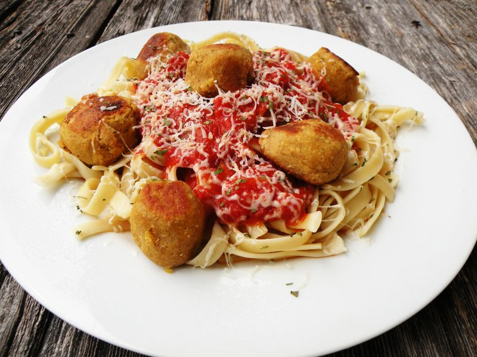

Boulettes de pois chiches
Préparation: 10 minutes
Cuisson: 10 minutes
Total: 8 heures 20 minutes
Ingrédients
-
2/3 t de pois chiches secs

-
2 oeuf
-
0.5 t de chapelure assaisonnée à l'italienne
-
2 c. à soupe de fromage parmesan
-
0.5 c. à thé de poivre
-
1 c. à thé d'ail en poudre
-
0.75 c. à thé de paprika fumé
-
0.5 c. à thé de sel
-
2 c. à table d'huile
Instructions
Préparation des pois chiches
Si vous êtes pressés, vous pouvez sauter ces étapes et préparer les boulettes en utilisant 1 conserve de pois chiche de 400 mL.
Faire tremper 2/3 t de pois chiches secs de 8 à 24 heures dans un volume au moins trois fois plus grand d'eau.
Jeter l'eau de trempage, rincer puis égoutter.
Cuire à l'autocuiseur pendant 15 minutes ou porter à ébullition et laisser mijoter 45 minutes dans un chaudron.
Préparation des boulettes
Broyer les pois chiches à l'aide d'un mélangeur et combiner 2 oeuf et les ingrédients secs.
- 2 oeuf
- 0.5 t de chapelure assaisonnée à l'italienne
- 2 c. à soupe de fromage parmesan
- 0.5 c. à thé de poivre
- 1 c. à thé d'ail en poudre
- 0.75 c. à thé de paprika fumé
- 0.5 c. à thé de sel
Façonner le mélange en boulettes pas trop grosses pour s'assurer que les œufs soient bien cuits à l'intérieur.
Faire chauffer l'huile dans une casserole à feu moyen, puis faire revenir les boulettes et cuire de 6 à 8 minutes.
Servir avec des pâtes à la sauce tomate, dans des sous-marins ou encore dans des pains pitas.